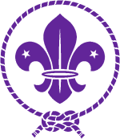
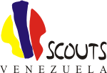

Asociación de Scouts de Venezuela
Es una agrupación voluntaria de niñas, niños, adolescentes, jóvenes y adultos de uno u otro sexo, inspirada en los ideales del Movimiento Scout Mundial fundado por Lord Baden-Powell de Gilwell.
Formalmente, está constituida como una asociación civil sin fines de lucro, con personería jurídica propia, legalmente registrada conforme al Acta Constitutiva de fecha 15 de febrero de 1937, inscrita en la Oficina Subalterna del Primer Circuito de Registro del Departamento Libertador del Distrito Federal, bajo el Nº 71, folio 93, Protocolo 1º, Tomo 2º.
La ASOCIACIÓN DE SCOUTS DE VENEZUELA, antes “Federación de Boys Scouts Exploradores) de Venezuela”, como heredera de la “Tropa San Sebastián”, fundada en Maracaibo el 27 de mayo de 1913 por Ramón Ocando Pérez, es la única organización Scout en Venezuela reconocida y aprobada por la Conferencia Scout Mundial. Sus miembros, por lo tanto, son los únicos autorizados para practicar el Escultismo ideado por Lord Baden-Powell de Gilwell, y para adquirir, usar y portar dentro y fuera del territorio de la República, los uniformes, insignias, distintivos, emblemas y cualquier otra identificación que les sean propias.

- El nombre “ASOCIACIÓN DE SCOUTS DE VENEZUELA” está registrado como denominación comercial en el Registro de la Propiedad ante Ministerio de Fomento, bajo el Nº 10832-D.
- El emblema con sus elementos gráficos y las palabras “SCOUTS” Y “VENEZUELA”, se encuentra registrado como denominación comercial en el Servicio Autónomo de la Propiedad Industrial (SAPI) del Ministerio de Producción y Comercio según solicitud registrada bajo el Nº 04-012537.